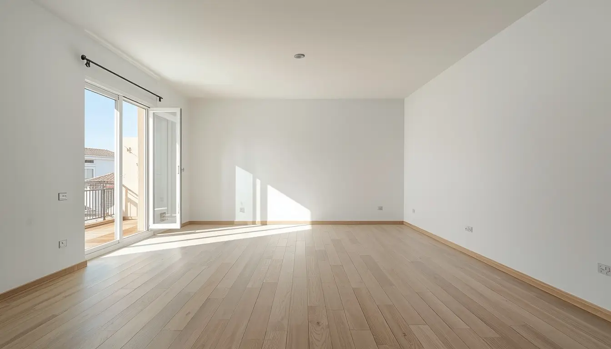
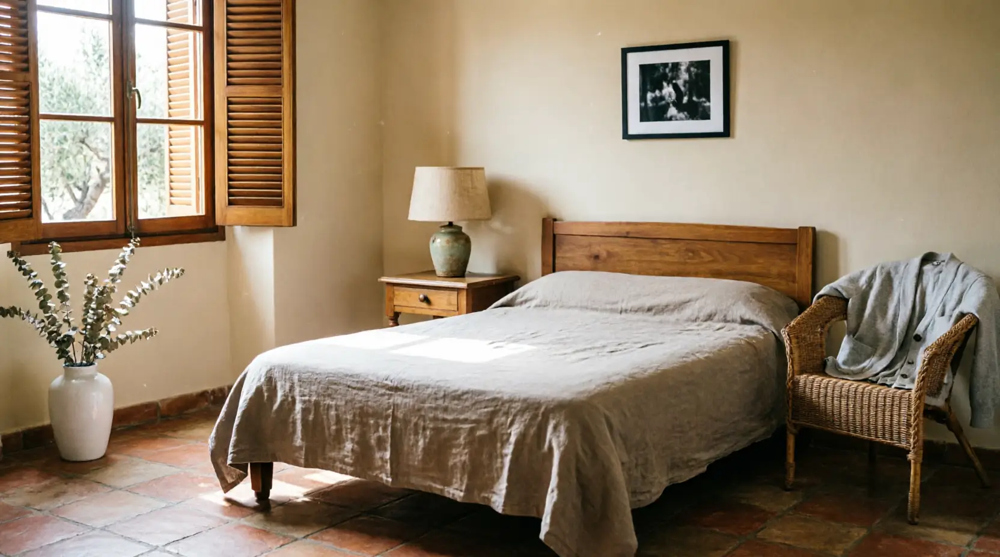
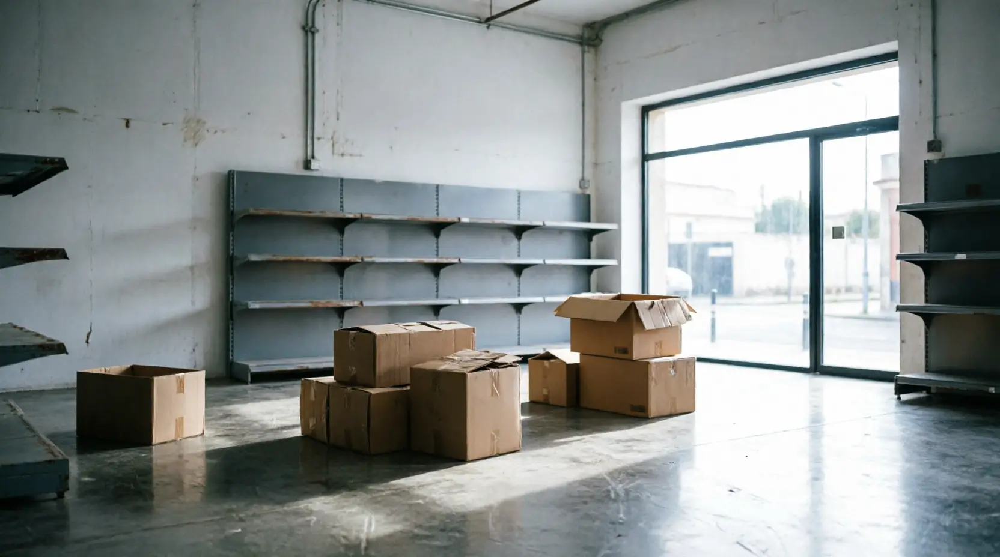
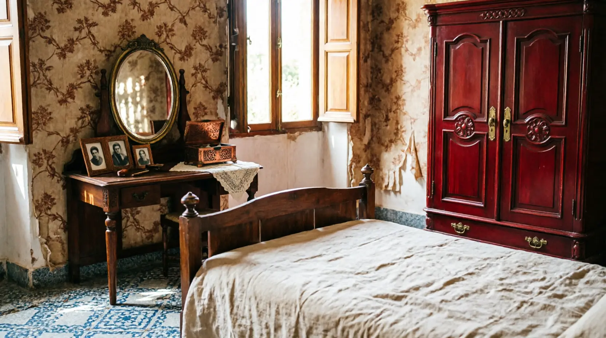

Vilanova i la Geltrú · Garraf · Vecinos del Garraf
Vaciado de pisos en Vilanova i la Geltrú
Somos vecinos de Sant Pere de Ribes/Sitges, a 15 minutos. No somos una empresa cara de Barcelona. Conocemos la realidad industrial, universitaria y portuaria de Vilanova y servimos la ciudad con precios ajustados al mercado real.
Vecinos del Garraf
Conocemos la Vilanova real, no la turística
Vilanova i la Geltrú es muy diferente a Sitges. Es una ciudad industrial, universitaria y portuaria, con una identidad propia y un mercado inmobiliario muy distinto al de las ciudades turísticas del Garraf.
Al estar en Sant Pere de Ribes a solo 15 minutos, podemos llegar rápidamente sin los costes de desplazamiento que cobran las empresas de Barcelona. Eso repercute directamente en el precio final.
Vilanova i la Geltrú
Vilanova i la Geltrú
- Ciudad industrial y universitaria
- Alto porcentaje de pisos de estudiantes
- Viviendas obreras y populares
- Zona portuaria industrial activa
- Precios más accesibles
- Comunidades más grandes y antiguas
- Mayor rotación de inquilinos
Sitges (para comparar)
- Ciudad turística y vacacional
- Alta proporción de segunda residencia
- Propiedades de lujo y vacacionales
- Zona portuaria deportiva y turística
- Precios premium
- Urbanizaciones exclusivas con normas
- Propiedades vacías por temporadas
Servicios
Servicios adaptados a la Vilanova real
No somos una empresa turística. Entendemos las necesidades reales de una ciudad industrial, universitaria y portuaria.
Vaciado por defunción en Vilanova
Gestión sensible en barrios populares de Vilanova. Conocemos las comunidades grandes y trabajamos con discreción y respeto, coordinando previamente con administradores y vecinos.
Leer guía completaLimpieza por síndrome de Diógenes
Protocolos especializados para viviendas obreras y pisos antiguos de Vilanova. Discreción garantizada en comunidades grandes, con EPIs completos y desinfección profesional.
Ver protocolo de limpieza DiógenesVaciado de pisos de estudiantes
Especialistas en vaciado al finalizar cursos universitarios en Vilanova. Conocemos los picos de demanda en junio y julio, con protocolos rápidos para pisos compartidos con mobiliario estudiantil.
Saber másPintura en zona puerto de Vilanova
Pintura profesional adaptada a propiedades cerca del puerto industrial. Materiales resistentes a humedad y contaminación portuaria para mayor durabilidad de los acabados.
Saber másReparaciones en viviendas antiguas
Reparaciones en viviendas obreras de Vilanova. Conocemos los materiales y sistemas constructivos de las edificaciones antiguas de la ciudad: fontanería, electricidad y carpintería.
Saber másGestión inmobiliaria en Vilanova
Precios ajustados al mercado real de Vilanova. Trabajamos con inmobiliarias locales que conocen los barrios populares. Si el objetivo es vender, el vaciado puede salirle sin coste.
Saber másLimpieza de pisos compartidos
Limpieza integral para pisos de estudiantes o compartidos en Vilanova. Dejamos la vivienda lista para nuevos inquilinos: limpieza profunda, gestión de enseres y preparación completa.
Saber másVaciado para personas mayores
Atención especializada para personas mayores en barrios populares de Vilanova. Trato respetuoso, paciencia y ayuda en la transición con la sensibilidad que merece cada situación.
Saber másZonas de Vilanova
Conocemos cada zona de Vilanova i la Geltrú
Centro · Zona Universitaria Alta concentración de pisos de estudiantes. Experiencia en vaciados al finalizar cursos académicos, gestión rápida de pisos compartidos y coordinación con propietarios que alquilan a universitarios.
Zona Puerto · Marítim Propiedades cerca del puerto industrial. Protocolos especiales para humedad y salinidad portuaria, materiales específicos en reparaciones y pintura resistente al entorno costero industrial.
Barrios Populares Barrios obreros con viviendas antiguas y comunidades grandes. Experiencia en gestiones con administraciones, coordinación previa con vecinos y respeto por las normas de convivencia de cada comunidad.
El Carme · Els Avets Barrios residenciales consolidados con mezcla de edificios de diferentes épocas. Adaptamos equipos y vehículos según el tipo de acceso y las particularidades de cada inmueble.
Sant Gervasi · Mas del Molí Áreas con predominio residencial y comunidades bien organizadas. Coordinación directa con administradores y cumplimiento de todas las normativas comunitarias establecidas.
La Guàrdia · El Far · El Poblet Zonas con diferentes tipologías de edificación. Servicio adaptado a cada realidad, desde pisos compactos del centro hasta chalets en zonas más tranquilas de la ciudad.



Recursos oficiales
Información útil para propietarios en Vilanova
Trámites municipales, gestión de residuos y recursos del Ajuntament de Vilanova i la Geltrú.
🏛️ Ajuntament de Vilanova i la Geltrú
Página oficial del ayuntamiento con trámites y normativa municipal.
www.vilanova.cat🗑️ Deixalleria de Vilanova
Servicio municipal de residuos y punto limpio.
Deixalleria municipal Medio Ambiente📜 Normativa municipal
Ordenanzas, reglamentos y trámites municipales oficiales.
Ordenanzas municipales Trámites municipales🔗 Páginas del Garraf
Nuestros otros servicios locales en la comarca del Garraf.
Sant Pere de Ribes Sitges Servicio PremiumCómo trabajamos en Vilanova
Proceso adaptado a la ciudad industrial y universitaria
Vilanova no funciona como Barcelona ni como Sitges. Nuestro proceso está adaptado a su realidad específica.
Valoración rápida desde el Garraf
Estamos a 15 minutos. Podemos visitar el piso, local o vivienda el mismo día sin costes de desplazamiento. También hacemos valoración por videollamada si lo prefiere.
Coordinación con comunidades grandes
Vilanova tiene muchas fincas antiguas con comunidades y alta rotación de inquilinos. Hablamos con administradores, avisamos a vecinos y gestionamos accesos para evitar conflictos.
Protocolos para pisos de estudiantes
En junio y julio la ciudad se vacía. Tenemos un sistema rápido para pisos compartidos: retirada de muebles, limpieza profunda y entrega lista para nuevos inquilinos en tiempo récord.
Tratamiento especial en zona portuaria
Las viviendas cerca del puerto industrial requieren materiales específicos. Adaptamos pintura, limpieza y reparaciones al entorno portuario para garantizar mayor durabilidad.
Gestión de residuos y entrega
Clasificamos muebles y enseres según la normativa del Garraf. Lo que se puede donar, se dona; lo que se recicla, se recicla. Propiedad lista para alquilar, vender o entregar.
Precios orientativos
Precios del Garraf, no de Barcelona
Sin costes de desplazamiento y ajustados al mercado real de Vilanova. Presupuesto cerrado y gratuito en menos de 24h.
Piso 50–60m² con muebles vacíos
Piso 50–60m² con muebles y enseres
Casos de acumulación severa, desde
* Precios orientativos. Presupuesto exacto tras visita o videollamada gratuita.
Sin costes de desplazamiento
Al estar en Sant Pere de Ribes a 15 minutos, no cobramos desplazamiento a Vilanova. Las empresas de Barcelona suelen añadir entre 80 y 150€ solo por llegar. Ese ahorro es directo para usted.
Clientes satisfechos
Vecinos de Vilanova que confiaron en nosotros
«Vaciaron el piso de estudiantes de mi hijo en Vilanova al terminar la carrera. Lo que más me gustó fue que al ser de Sant Pere de Ribes vinieron en menos de 20 minutos y sus precios eran mucho mejores que los de Barcelona.»
«Excelente servicio en el puerto de Vilanova. Conocían los problemas de humedad de la zona y usaron materiales adecuados. Al ser vecinos del Garraf, el precio fue muy razonable comparado con empresas de Barcelona.»
«Vaciaron el piso de mis padres en un barrio popular de Vilanova. Fueron muy respetuosos con los vecinos y gestionaron todo con la comunidad sin problemas. Al ser del Garraf, entendían perfectamente cómo funcionan estas comunidades.»
Preguntas frecuentes
Lo que nos preguntan sobre vaciados en Vilanova
Resolvemos las dudas más comunes para una ciudad industrial, universitaria y portuaria.
Somos vecinos del Garraf (Sant Pere de Ribes/Sitges), no una empresa de Barcelona. Nuestros costes de desplazamiento son mínimos, no tenemos oficinas caras en Barcelona, y ajustamos nuestros precios al mercado real de Vilanova, que es más accesible que el barcelonés.
Sí. Somos especialistas en vaciado de pisos de estudiantes en Vilanova. Conocemos los picos de demanda en junio y julio cuando termina el curso académico, y tenemos protocolos específicos para pisos compartidos con mobiliario estudiantil.
Aplicamos protocolos específicos para zona portuaria industrial: evaluación del estado por humedad y contaminación portuaria, protección especial durante el transporte, uso de materiales resistentes en reparaciones y pintura, y coordinación con los horarios de actividad portuaria.
Ofrecemos gestión inmobiliaria con precios ajustados al mercado de Vilanova. Trabajamos con inmobiliarias locales que conocen los barrios populares. Si el objetivo es vender, podemos ofrecer el vaciado sin coste, financiándolo con la venta posterior.
Tenemos experiencia en las comunidades grandes de Vilanova. Coordinamos previamente con los administradores, respetamos los horarios de las comunidades, utilizamos las zonas de carga adecuadas y mantenemos comunicación constante con los vecinos durante todo el proceso.
Contacto
¿Necesita vaciar una propiedad en Vilanova i la Geltrú?
Le respondemos en menos de 1 hora. Presupuesto cerrado con precios ajustados al mercado de Vilanova. Sin costes de desplazamiento.
Contacto para Vilanova
Teléfono
688 30 41 43Horario adaptado
Lunes–Viernes: 8:00–20:00
Sábados: 9:00–14:00
Fines de semana bajo petición
Proximidad y precio
Somos vecinos de Sant Pere de Ribes. Servimos Vilanova en 15 minutos sin costes extra de desplazamiento.
Solicite su presupuesto gratuito
Rellene el formulario y le llamamos en menos de 1 hora con un presupuesto orientativo ajustado al mercado de Vilanova.
¿Necesita vaciar una propiedad en Vilanova i la Geltrú?
Somos vecinos de Sant Pere de Ribes/Sitges, no una empresa cara de Barcelona. Servimos Vilanova con precios ajustados al mercado real de la ciudad, sin costes de desplazamiento y con conocimiento local.
Solicitar presupuesto ahora